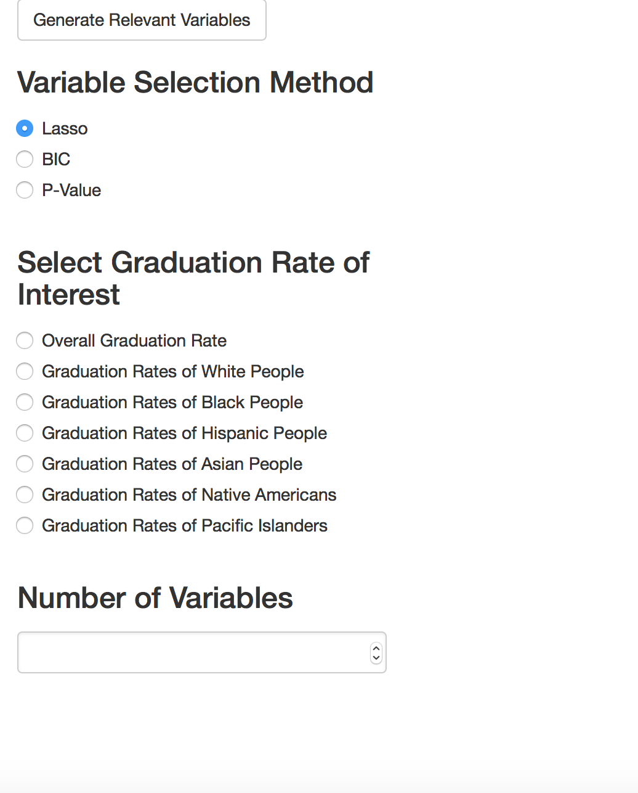

The final project for Stat 159 consists of performing a virtual consulting data analysis project using data from College Scorecard. The underlying goal is to use all the computational tools and apply all the concepts covered in the course to create a computationally reproducible analysis.
Suppose we are Public Policy Researchers hired by the government. The government is interested in boosting graduation rates across the nation. However, its resources are limited, and the government is not sure how to spend its money.
Our Goal:
determine which variables affect a college's graduation rate the most
know how the variables might change if were to look at graduation rates of people with different ehtnicities
In order to answer these questions, the government wants us to build an interactive web application that allows a non-technical user to find the relevant variables for a specific ethnicity's graduation rates.
We used data from https://collegescorecard.ed.gov/ . College Scorecard is developed by the U.S. Department of Education (under Obama’s Administration) to provide “key indicators about the cost and value of institutions across the country to help students choose a school that is well-suited to meet their needs, priced affordably, and is consistent with their educational and career goals”.
The dataset we chose is MERGED2014_15_PP.csv because it is the most recent, hence relevant to make future decisions and to understand each variable, we referred to the data dictionary
Our first step is data cleaning. From the variables, we selected variables that are m ost relevant to achieve our goal, and removed variables with NULL values.
We will discuss 3 variable selection methods:
Lasso Regression
P-Values
Bayesian Information Criterion
Lasso Regression is essentially just a slight modification of Least-Squares Regression. In Least-Squares, the optimal solution is the beta vector that minimizes the sum of squared residuals.
The optimal solution for Lasso is the beta vector that minimizes both the sum of squared residuals (bias) and the absolute norm of the beta vector (model complexity).
The solution to Lasso has the added benefit of setting multiple beta coefficients equal to zero.
The variables that correspond to these beta coefficients of zero are usually interpreted as having a minimal impact on the response variable.
While p-values are usually associated with hypothesis testing, they can actually also be used for variable selection as well. For instance, imagine that we're in the linear regression setting where we have p explanatory variables, n observations, and one response variable y.
We run p regressions where we regress y individually on every single explanatory variable to find the variable with the most explanatory power.
We then compare these p regressions and select the variable with the beta coefficient that has the smallest p-value. Lets call this variable X1.
In order to find the variable with the 2nd most explanatory power, we can run p-1 regressions where we regress y on X1 and a second explanatory variable. We then select the variable with the beta coefficient that has the smallest p-value. This variable can be interpreted as the second most important explanatory variable.
We can iterate this process until we're satisfied with the number of relevant explanatory variables we have.
BIC (Bayesian Information Criterion) is a criterion for model selection in whcih in a subset of models, the model with the lowest BIC value is deemed the best model.
BIC is composed of both a bias term and a model complexity term. As a result, in order to achieve a low BIC, a model has to do a decent job of minimizing bias without too much model complexity.
While BIC is normally used for model selection, it can also do a decent job at variable selection.
Using the forward stepwise selection algorithm, we would sequentially add a variable to the model, and this was the variable that decreased BIC the most.
We would stop adding variables to the model once they started to increase the BIC of our model.
We could see how each model (Lasso, P Value-based forward selection, BIC-based forward selection) performs from a predictive standpoint and use the model that has the most predictive power.
However, the model that has the most predictive power is not necessarily the model that is the best at variable selection. The optimal model for variable selection is the model that is able to most accurately estimate beta coefficients for our explanatory variables.
Unfortunately, given that we don't know each explanatory variable's true effect on graduation rate, there is no way for us to check how accurate our beta coefficient estimates are. As a result, there's no simple way for us to pick the model that is the best at variable selection.
We will use all of 3 of our models. Each model will identify a set of relevant explanatory variables.
If a subset of these variables appear in all 3 of our models, we can identify these variables as extremely relevant to graduation rates. Our Shiny R app will help us find the relevant variables for graduation rates.
Once we figured out which variable selection methods we wanted to use and how we wanted to use them, we were then able to implement them using a Shiny R App. The Shiny R App will then output the specified number of relevant variables for the specified graduation rate. 